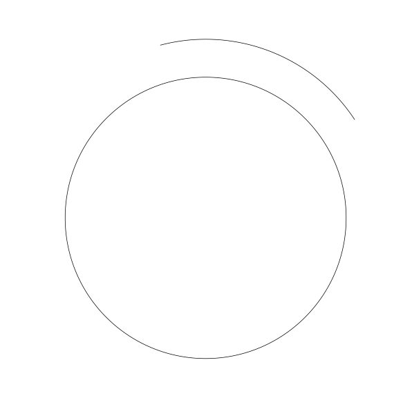
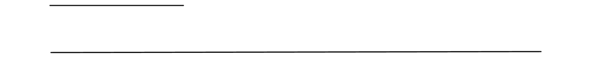
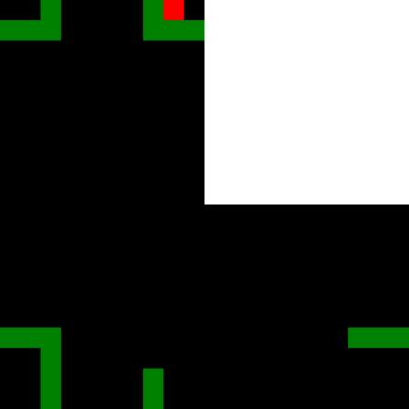
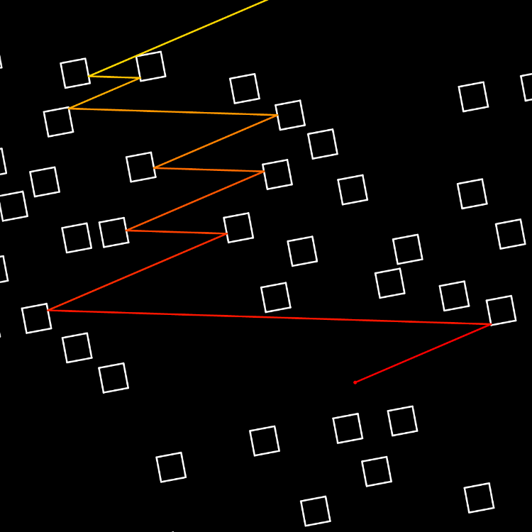

Activités de recherche - une présentation pour GAMBLE
Alba Marina MÁLAGA SABOGAL
14 mai 2020
Systèmes dynamiques
Le problème général
- Evolution deterministe à court terme, qu’on connaît.
- Les questions qu’on se pose concernent l’évolution à long terme.
Un exemple concret : les rotations du cercle:
\(α\) nombre
\(ρ:𝕊^1\to 𝕊^1\) rotation par un angle \(α\)

Conjugué à :

\(𝕋 = ℝ/ℤ = [0,1]/\{0~1\}\).
Les rotations comme échanges d’intervalles
Paramétre: \(α ∈ [0,1[\)
Espace des phases: \(𝕋 = ℝ/ℤ = [0,1]/\{0~1\}\)
\(\begin{array}{rcrcl} ρ_- & : & [0,1-α[ & \to & [α,1[\\ & & x & \mapsto & x + α \end{array}\)
\(\begin{array}{rcrcl} ρ_+ & : & [1-α,1[ & \to & [0,α[\\ & & x & \mapsto & x + α - 1 \end{array}\)
Un exemple fondamental: le tore

La caracteristique d’Euler et le genre:

\(χ = V-E+F = 1 - 2 + 1 = 0\)
\(χ=2-2g\)
\(g=1\)
Un autre exemple simple de surface de translation: le L

La caracteristique d’Euler et le genre du L:

\(χ = V-E+F = 1 - 2 + 1 = 0\)
\(χ=2-2g\)
\(g=1\)
Une autre vue du L:

\(χ = V-E+F = 1 - 6 + 3 = -2\)
\(χ=2-2g\)
\(g=2\)
Définition de surface de translation “finie”.
Une surface de translation est une surface compacte sans bord qui, privée d’un nombre fini de points, possède un atlas tel que que les changements de cartes dans cet atlas sont des translations. Supposons que l’atlas est maximal - les points non couverts par l’atlas sont des singularités coniques de la géométrie de la surface avec un angle qui est un multiple entier de 360 degrés.
Dynamique sur une surface de translation
Billards: un contexte où les surfaces de translation apparaissent naturellement
Questions ouvertes sur des billards polygonaux:
- il existe toujours des trajectoires périodiques ?
- toutes les trajectoires sont denses ? (minimalité)
- il y a ou pas des partitions non triviales (en mesure) en sous-ensembles invariants ? (ergodicité)
La troisième question de cette liste était le point de départ de ma thèse, effectuée de 2011 à 2014 à Orsay sous la direction de Jean-Christophe Yoccoz. La question est encore ouverte, he he, c’est à dire que finalement dans ma thèse je réponds à d’autres questions (moralement) en rapport avec celle-ci.
Cylindres discrets - motivation
Similarité avec des familles d’applications sur le cylindre discret \(ℤ×𝕋\). L’étude de la dynamique de ces applications fût finalement l’objet de ma thèse.
Techniques developpées dans la thèse
Pour montrer ces résultats, je me suis appuyé sur des résultats bien connus pour des échanges d’intervalles, pour lesquelles les propriétés dynamiques que j’étudiais était déjà bien connues:
Thm (Poincaré) Tout système dynamique de mesure finie est conservatif.
Thm (Keane) Tout échange d’intervalles “irréductible” est minimal.
Thm (Masur-Tabachnikov) Tout échange d’intervalle minimal est aussi ergodique.
Ensuite, j’ai procédé par perturbations: des valeurs spéciales de \(α_n=±½\), (c-à-d les rotations par un demi-tour), permettent d’obtenir des sous-ensembles dans l’espace des phases qui sont invariants et qui sont des échanges d’intervalles classiques. Ensuite, en traduit la propriété dynamique qu’on veut montrer dans une formule quantitative et puis on construit des ouverts denses autour de ces paramètres spéciaux en prenant garde à ne pertuber qu’un petit peu cette formule.
Les surfaces en escalier.
Le modèle wind-tree des Ehrenfest:

Avec Serge Troubetzkoy, on a montré que génériquement, la dynamique du wind-tree est minimale (2015), ergodique (2016), de puissances cartésiennes ergodiques (2016-2017) et uniquement ergodique (2017-2019) dans presque toute direction.
Retour aux surfaces en escalier:
Illustrations des mathématiques et intégration dans Gamble
Tores plats et autres surfaces de translation pliées en origami
Pliages en papier hyperbolique (ou Kombucha)
Impression 3D de surfaces algébriques
Impression 3D d’autres objets mathématiques
Analyse d’anciens objets en plâtre
Ce que (je pense que) je peut apporter dans Gamble
En tant que mathématicienne
Compétences poussées en:
- géométries 2D et 3D (y compris non-euclidiennes)
- systèmes dynamiques
Compétences raisonnables en:
- géométrie algébrique “à l’ancienne” (c-à-dire sans schemas)
- géométrie riemannienne
- analyse numérique
- théorie des probabilités
En tant que médiatrice scientifique
- une facilité à parler de sciences avec… tout le monde
- un réseau de contacts en mathématiques qui va bien au-délà de mon domaine
- un savoir-faire de “maker”